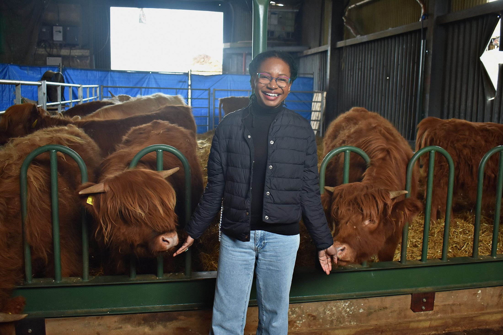

Scarlet#E8402E
Amber & Ochre#FF7A33
Ginger#D98A3D
Green#8FBF3C
Bone#F4F0EA
Slate#8A97A6
Purple & Magenta#C94FD8

Fomes fomentarius, the hoof fungus Ötzi the Iceman carried to start fires — the size of a dinner plate, and the only reasonable response is to hand it to someone else and marvel.
In process